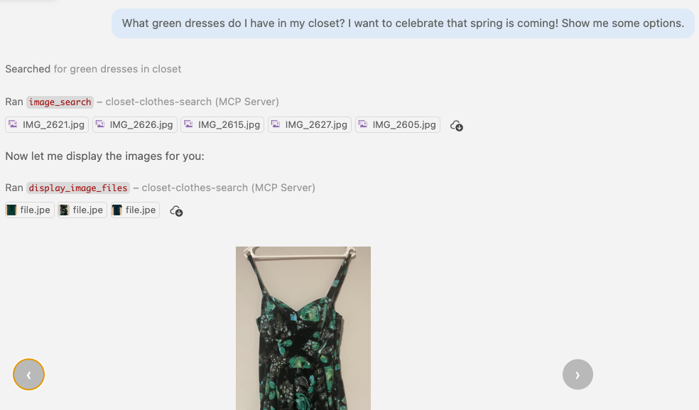

What if I could use MCP to pick my outfit for today?

This tool signature:
@mcp.tool
async def add_expense(
expense_date: str,
amount: float,
category: str,
description: str,
) -> str:
"""Add a new expense."""
...
becomes this schema:
{
"name": "add_expense",
"description": "Add a new expense.",
"inputSchema": {
"properties": {
"expense_date": {"type": "string"},
"amount": {"type": "number"},
"category": {"type": "string"},
"description": {"type": "string"}
},
"required": ["expense_date", "amount",
"category", "description"],
"type": "object"
}
}
What does the model suggest for the category string?
Across 83 tool calls:
Python code:
category: Annotated[
str,
Field(
description="Must be one of: "
"Food & drink, "
"Transit and Fuel, "
"Media & streaming, "
"Apparel and Beauty, "
"Electronics & tech, "
"Home and office, ..."
),
],
Generated schema:
"category": {
"type": "string",
"description": "Must be one of:
Food & drink,
Transit and Fuel,
Media & streaming,
Apparel and Beauty,
Electronics & tech,
Home and office, ..."
}
Python code:
CATEGORY_LITERAL = Literal[
"Food & drink", "Transit and Fuel",
"Media & streaming", ...
]
category: CATEGORY_LITERAL,
class Category(Enum):
FOOD_AND_DRINK = "Food & drink"
TRANSIT_AND_FUEL = "Transit and Fuel"
...
category: Category,
Generated schema:
"category": {
"type": "string",
"enum": [
"Food & drink",
"Transit and Fuel",
"Media & streaming", ...
]
}
Python code:
category: Annotated[
Category,
Field(
description=(
"Choose the closest category. "
"If truly unclear, use Misc.\n\n"
"Heuristics: "
"Food & drink=meals, coffee; "
"Transit and Fuel=rideshare, "
"gas, parking; ..."
)
),
],
Generated schema:
"category": {
"type": "string",
"enum": [
"Food & drink",
"Transit and Fuel",
"Media & streaming", ...
],
"description": "Choose the closest
category. If truly unclear, use
Misc. Heuristics: Food & drink=
meals, coffee; Transit and Fuel=
rideshare, gas, parking; ..."
}
server = MCPServerStreamableHTTP(url="http://localhost:8000/mcp")
model = OpenAIResponsesModel(
"gpt-5.3-codex",
provider=OpenAIProvider(openai_client=azure_openai_client))
agent = Agent(
model,
system_prompt=(
"You help users log expenses. "
f"Today's date is {datetime.now().strftime('%B %-d, %Y')}."
),
output_type=str,
toolsets=[server],
)
result = await agent.run("I bought a sandwich for $12.50.")
The MCP server exposes multiple versions of the same tool with different schemas:
def add_expense_cat_b(category: Annotated[str, Field(description="...")], ...): ...
def add_expense_cat_c(category: Literal["Food & drink", ...], ...): ...
def add_expense_cat_d(category: ExpenseCategory, ...): ...
def add_expense_cat_e(category: Annotated[ExpenseCategory, Field(description="...")], ...): ...
The agent only sees one schema variant at a time, thanks to filtering:
toolset = server.filtered(
lambda ctx, tool: tool.name == f"add_expense_cat_b")
agent = Agent(model, toolsets=[toolset], ...)
result = await agent.run(case.prompt)
EXPENSE_CASES = [
ExpenseCase(
name="clear_food_yesterday",
prompt="Yesterday I bought a sandwich for $12.50.",
expected_category="Food & drink",
expected_date=get_yesterday(),
expected_amount=12.50,
),
... # 17 cases ➡️
]
def evaluate_category_match(tool_calls, expected):
"""Does the category match what we expected?"""
for tc in tool_calls:
category = tc.arguments.get("category")
if category == expected:
return EvalResult(passed=True, score=1.0)
return EvalResult(passed=False, score=0.0)
for variant in ["cat_b", "cat_c", "cat_d", "cat_e"]:
toolset = server.filtered(
tool_filter=lambda t: t.name == f"add_expense_{variant}")
agent = Agent(model, toolsets=[toolset], ...)
for case in EXPENSE_CASES:
result = await agent.run(case.prompt)
evals = run_all_evaluations(
result.tool_calls, case)
gpt-4.1-mini, 17 cases for each schema, with a Pydantic-AI agent:
Annotated[str] | Literal | Enum | Annotated[Enum] | |
|---|---|---|---|---|
| Was tool called? | 15/17 | 16/17 | 16/17 | 17/17 |
| When called, did category match expected? | 14/15 | 13/16 | 13/16 | 15/17 |
| Schema size (avg tokens) | 374 | 412 | 424 | 836 |
When did tool calling improve?
Annotated[str]Annotated[Enum]When did category match improve?
LiteralAnnotated[Enum]Annotated[str]Annotated[Enum]Bare string
Annotated description
date type
Regex pattern
expense_date: str,expense_date: Annotated[
str, "Date in YYYY-MM-DD format"
],expense_date: date,expense_date: Annotated[
str,
Field(pattern=r"^\d{4}-\d{2}-\d{2}$"),
],↓
↓
↓
↓
"expense_date": {
"type": "string"
}"expense_date": {
"description": "Date in YYYY-MM-DD format",
"type": "string"
}"expense_date": {
"format": "date",
"type": "string"
}"expense_date": {
"pattern": "^\\d{4}-\\d{2}-\\d{2}$",
"type": "string"
}gpt-4.1-mini, 17 cases for each date schema, with a Pydantic-AI agent:
str | Annotated[str] | date | Field(pattern) | |
|---|---|---|---|---|
| Was tool called? | 17/17 | 17/17 | 17/17 | 17/17 |
| Date match (of called) | 12/17 | 12/17 | 12/17 | 12/17 |
| Schema size (avg tokens) | 326 | 406 | 414 | 423 |
Date schema made zero difference! All 4 variants produced identical results for every case.
Why? The parameter name expense_date already implies ISO 8601 format:
str (no hints at all!)Field(pattern) (regex)All 5 failures were date miscalculation on relative dates — not a schema issue:
strField(pattern)Same 17 test cases, same Pydantic AI agent, different models:
Category
Did agent call the tool?
| Schema | gpt-4o | 4.1-mini | 5.3-codex (med) |
|---|---|---|---|
Annotated[str] | 17/17 | 15/17 | 17/17 |
Literal | 17/17 | 16/17 | 17/17 |
Enum | 17/17 | 16/17 | 17/17 |
Annotated[Enum] | 17/17 | 17/17 | 17/17 |
When called, did category match expected?
| Schema | gpt-4o | 4.1-mini | 5.3-codex (med) |
|---|---|---|---|
Annotated[str] | 17/17 | 14/15 | 15/17 |
Literal | 15/17 | 13/16 | 13/17 |
Enum | 14/17 | 13/16 | 13/17 |
Annotated[Enum] | 17/17 | 15/17 | 15/17 |
Date
Did agent call the tool?
| Schema | gpt-4o | 4.1-mini | 5.3-codex (med) |
|---|---|---|---|
str | 17/17 | 17/17 | 17/17 |
Annotated[str] | 17/17 | 17/17 | 17/17 |
date | 17/17 | 17/17 | 17/17 |
Field(pattern) | 17/17 | 17/17 | 17/17 |
When called, did date match expected?
| Schema | gpt-4o | 4.1-mini | 5.3-codex (med) |
|---|---|---|---|
str | 15/17 | 12/17 | 17/17 |
Annotated[str] | 15/17 | 12/17 | 17/17 |
date | 15/17 | 12/17 | 17/17 |
Field(pattern) | 15/17 | 12/17 | 17/17 |
Category: "Yesterday I spent $200 on a spa treatment." with Annotated[Enum]
Category: "Yesterday I bought a car for 35000 USD." with Annotated[Enum]
Date: "On the last day of last month I bought headphones for $79.99."
Disagree with the "expected" answers?
Evals can also reveal ambiguities in your categories or test data!
gpt-5.3-codex with Annotated[Enum], same 17 cases, varying reasoning effort:
| low | medium | high | xhigh | |
|---|---|---|---|---|
| Did category match ground truth? | 100% | 88.2% | 88.2% | 88.2% |
| Did date match ground truth? | 94.1% | 94.1% | 94.1% | 94.1% |
| Schema size (average tokens) | 862 | 890 | 939 | 1114 |
| Latency (average ms) | 7,129 | 7,474 | 8,828 | 11,554 |
Why?
lowmediumMore reasoning → more overthinking → wrong answer!
client = CopilotClient()
session = await client.create_session(SessionConfig(
model="gpt-5.3-codex",
mcp_servers={
"expenses": MCPRemoteServerConfig(
type="http",
url="http://localhost:8000/mcp",
tools=["add_expense_cat_e"],
)
},
system_message={
"mode": "replace",
"content": "You help users log expenses. "
f"Today's date is {datetime.now().strftime('%B %-d, %Y')}.",
},
))
await session.send_and_wait({"prompt": "I bought a sandwich for $12.50."})
Same model (gpt-5.3-codex), same 17 cases, same MCP server, different agent framework:
Was tool called at all?
| Schema | Pydantic AI | Copilot SDK |
|---|---|---|
Annotated[str] | 17/17 | 17/17 |
Literal | 17/17 | 17/17 |
Enum | 17/17 | 17/17 |
Annotated[Enum] | 17/17 | 17/17 |
Did category match expected?
| Schema | Pydantic AI | Copilot SDK |
|---|---|---|
Annotated[str] | 15/17 | 15/17 |
Literal | 13/17 | 13/17 |
Enum | 13/17 | 13/17 |
Annotated[Enum] | 15/17 | 15/17 |
Did date match expected?
| Schema | Pydantic AI | Copilot SDK |
|---|---|---|
str | 17/17 | 17/17 |
Annotated[str] | 17/17 | 17/17 |
date | 17/17 | 17/17 |
Field(pattern) | 17/17 | 17/17 |
Python code:
@mcp.tool
def get_expenses_a() -> str:
"""Get all expenses."""
return "\n".join(
f"Date: {e['date']}, Amount: ${e['amount']}, "
f"Category: {e['category']}, ..."
for e in expenses
)
Example output:
Date: 2025-01-02, Amount: $4.50,
Category: Food & drink,
Description: Morning coffee
Date: 2025-01-02, Amount: $12.99,
Category: Food & drink,
Description: Lunch sandwich
Date: 2025-01-03, Amount: $45.00,
Category: Transit and Fuel,
Description: Gas station fill-up
...
Python code:
class Expense(BaseModel):
"""A single expense record."""
expense_date: date = Field(
alias="date",
description="Date of the expense")
amount: float = Field(
description="Amount spent")
category: str = Field(
description="Category of expense")
description: str = Field(
description="Description of the expense")
@mcp.tool
def get_expenses_c() -> list[Expense]:
"""Get all expenses."""
return [Expense(**e) for e in expenses]
Example output:
[
{"date": "2025-01-02",
"amount": 4.5,
"category": "Food & drink",
"description": "Morning coffee"},
{"date": "2025-01-02",
"amount": 12.99,
...},
...
]
gpt-5.3-codex, 7 cases for each schema, with a Pydantic-AI agent:
str | list[Expense] | |
|---|---|---|
| Answered correctly? | 7/7 | 7/7 |
| Tool response size | 6,297 chars | 7,306 chars |
Accuracy is identical, but structured output costs more in tool response size.
So why use it? For consumption by downstream MCP servers or agents.
Slides:
pamelafox.github.io/py-ai-mcp-tool-schemas
Code:
github.com/pamelafox/py-ai-mcp-tool-schemas/
Questions? Find me online at:
| @pamelafox | |
| Mastodon | @pamelafox@fosstodon.org |
| BlueSky | @pamelafox.bsky.social |
| GitHub | www.github.com/pamelafox |
| Website | pamelafox.org |